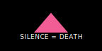
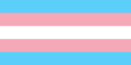
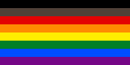
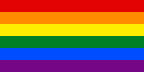

Welcome! Pride Flags are an important visual motif passed down through recent generations with immense historical significance. The scale of print media dissemination in past times has yielded an abundance of queer iconography available only in static, raster-based formats. With the rise of web and digital mediums, such distributions are not ideal. To address this constraint, I've created and assembled here a preliminary and by no means definitive collection of queer pride symbolism rendered in Scalable Vector Format (SVG). Advantages include infinite resizability for various display resolutions and, overall, smaller file sizes. This page is an online resource for people seeking to represent aspects of the extended LGBTQIA+ community. Please feel welcome to share, distribute, and remix displayed content.
ACT UP | NY
Trans Pride
#MoreColorMorePride
Rainbow Pride
